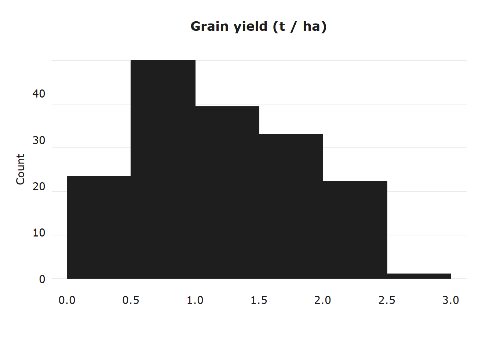
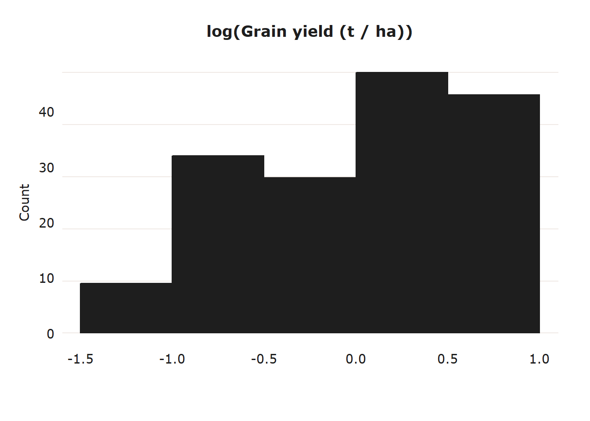
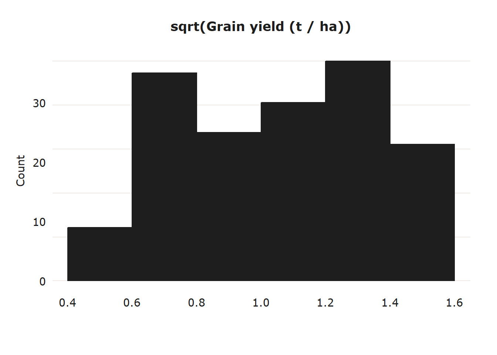
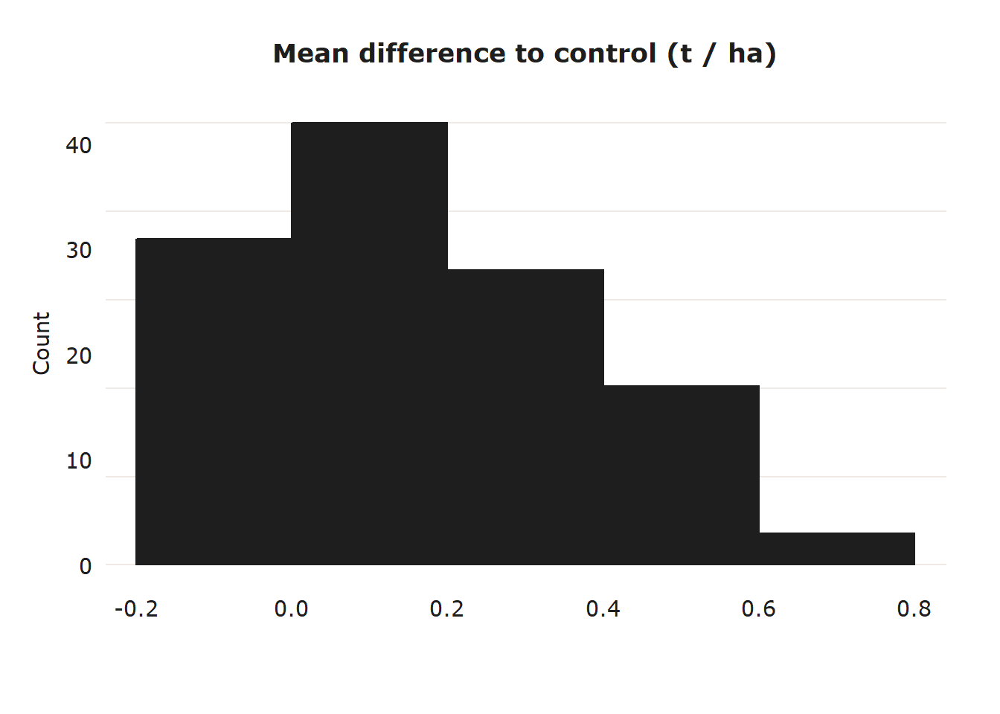

4 Prepare data for meta-analysis
4.1 Set environment and import data
4.2 Subset to trials containing DMI fungicides
DMI_Trials <-
PM_MB_dat %>%
filter(fungicide_ai == "tebuconazole" |
fungicide_ai == "propiconazole")%>%
distinct(trial_ref) %>%
pull()
PM_MB_dat <-
PM_MB_dat[PM_MB_dat$trial_ref %in% DMI_Trials,]Now remove any non-DMI treatments or controls
PM_MB_dat <-
PM_MB_dat %>%
filter(fungicide_ai == "control" |
fungicide_ai == "tebuconazole" |
fungicide_ai == "propiconazole")4.3 Standardising sample variance
Meta-analyses use variance from the data to calculate the effect sizes. The type of variance needs to be the same across all the data incorporated in the meta-analysis.
We are narrowing the meta-analysis to only include treatments using demethylation inhibitors, tebuconazole and propiconazole. Let’s look at what type of statistical error was reported for the trials that used these fungicides.
PM_MB_dat %>%
filter(fungicide_ai == "tebuconazole" |
fungicide_ai == "propiconazole") %>%
group_by(trial_ref, location, year , Y_error_type) %>%
summarise(DMI_treatments = length(Y_error_type), .groups = 'drop') %>%
arrange(Y_error_type) %>%
kable(caption = "Number of treatments for each trial and the error type reported",
align = "c") %>%
kableExtra::add_footnote(label = "DMI - demethylation inhibitors (tebuconazole and propiconazole).", notation = "none")| trial_ref | location | year | Y_error_type | DMI_treatments |
|---|---|---|---|---|
| mung1112/02 | Kingaroy | 2012 | lsd (P=0.05) | 6 |
| AM1303 | Premer | 2013 | stdev | 3 |
| AM1304 | Marys Mount | 2013 | stdev | 3 |
| AM1305 | Goolhi | 2013 | stdev | 3 |
| BB1305 | Millmerran | 2013 | stdev | 3 |
| mung1011/01 | Hermitage | 2011 | stdev | 2 |
| mung1011/02 | Kingaroy | 2011 | stdev | 6 |
| mung1415/01 | Hermitage | 2015 | stdev | 5 |
| mung1516/01 | Hermitage | 2016 | stdev | 6 |
| mung1516/02 | Kingaroy | 2016 | stdev | 6 |
| mung1617/01 | Hermitage | 2017 | stdev | 30 |
| mung1617/02 | Missen Flats | 2017 | stdev | 30 |
| mung1718/01 | Wellcamp | 2018 | stdev | 12 |
| mung1819/01 | Hermitage | 2019 | stdev | 3 |
| mung1819/02 | Hermitage | 2019 | stdev | 3 |
| DMI - demethylation inhibitors (tebuconazole and propiconazole). |
The experiment summaries report either standard deviation or least square differences. First we will convert LSD and standard deviation, then square the stdev to get sample variance.
4.3.1 Converting least-squares to sample variance
First let’s get a list the of trials that reported LSD.
Trials <- PM_MB_dat %>%
filter(Y_error_type == "lsd (P=0.05)") %>%
select(trial_ref) %>%
distinct()
Trials## trial_ref
## 1 mung1112/02Let’s use this list of trials to subset the data and calculate sampling variances.
We will follow the method of converting ‘least square differences’ (LSD) to sampling variance reported by Nugugi et.al (2011).
Tcrit <- 2.042
for (i in Trials$trial_ref) {
DFw <-
sum(PM_MB_dat[PM_MB_dat$trial_ref == i, ]$replicates) -
length(PM_MB_dat[PM_MB_dat$trial_ref == i, ]$replicates) # degrees of freedom within groups
LSD <-
PM_MB_dat[PM_MB_dat$trial_ref == i, ]$yield_error[1]
V_yield <-
(PM_MB_dat[PM_MB_dat$trial_ref == i, ]$replicates[1] *
(LSD / Tcrit) ^ 2) / 2
# method - Nugugi et.al (2011) DOI: 10.1094/phyto-08-10-0221
for (j in seq_along(PM_MB_dat[PM_MB_dat$trial_ref == i,]$replicates)) {
if (j == 1) {
Sv <-
vector(length = length(PM_MB_dat[PM_MB_dat$trial_ref == i,]$replicates))
} # reset Sv vector if this is the first loop
Sv[j] = V_yield /
PM_MB_dat[PM_MB_dat$trial_ref == i,]$replicates[j]
}
# Replace the values in the dataset
PM_MB_dat[PM_MB_dat$trial_ref == i,]$yield_error <-
Sv
PM_MB_dat[PM_MB_dat$trial_ref == i,]$Y_error_type <-
"SamplingVariance"
}4.3.2 Converting standard deviation to sample variance
Now to estimate the variance from the standard deviation.
# subset data by those which describe the Yield error with standard deviation
Trials <- PM_MB_dat %>%
filter(Y_error_type == "stdev") %>%
select(trial_ref) %>%
pull()
PM_MB_dat[PM_MB_dat$trial_ref %in% Trials,"yield_error"] <-
PM_MB_dat[PM_MB_dat$trial_ref %in% Trials,"yield_error"]^2
PM_MB_dat[PM_MB_dat$trial_ref %in% Trials,]$Y_error_type <-
"SamplingVariance"4.3.3 Check variance of data-set
Our data currently uses sample variance to define the yield error. We should expect that when yield increases so does the variance. Let’s quickly plot this to check.

There seems to be no association between yield and sample variance, this might be due to the variability of mungbeans yields.
Lets look at the association between mean squares and yield to see if there is a more typical association between yield and variance.
## Warning: Removed 7 rows containing missing values (geom_point).
There is a somewhat better trend here, if sampling variance from standard deviation proves unsuitable for the analysis we may compare models using variance from stdev and mean square for the best fit. However, seven treatments are missing mean square error.
4.3.4 Inspect variance and response for analysis
Let’s inspect the response variance grain_yield.t.ha to see if it is normally distributed.
In many cases a log transformation of the response variable improves the fit, due to the prevalence of log distributed data in nature.




The distribution of data does not seem to be improved by transformation of the data. We will retain the continuous variable grain_yield.t.ha as the response. Mean differences won’t be used as we are following the methodology of a ARM-based model, where mean differences are calculated following the meta-analysis.
4.3.4.1 Calculate sample variance from mean square errors
Currently our data frame has the sample variance calculated earlier, however we can approximate it using the mean squared error.
Let’s show the rational for our calculation and then add a secondary variance column (vi2).
\(MSE = Var + bias\)
However if our MSE was calculated from an unbiased sample we can assume \(bias = 0\) and therefore:
\(MSE = Var\)
To calculate the sample variance (for each treatment in the trial) from the mean square error (Trial variance) all we need to do is divide by the number of samples in each treatment. We can show this because: \(MSE = \frac{\sum_{y_1}^{y_n}(y_i - \overline{y})^2}{n - 1}\) Where the sum of squares for the fungicide treatment estimator (\(y\)) is divided by the number of fungicide treatments (\(n\)).
The sample variance is a similar formula except we use \(x\) instead of \(y\).
\(S_{Var} = \frac{\sum_{x_1}^{x_n}(x_i - \overline{x})^2}{n - 1}\)
\(x\) being each observation within the experiment and \(n\) being the number of samples in the whole trial.
Therefore:
\(S_{Var}\approx\frac{1}{n_{x}}\frac{\sum_{y_1}^{y_n}(y_i - \overline{y})^2}{n_y - 1}\)
Where \(n_x\) is the number of samples within each treatment.
As mentioned before there are a few treatments with no MSE (NAs), we can calculate it from the sample variance using this logic above.
PM_MB_dat[is.na(PM_MB_dat$Y_Msquare),"Y_Msquare"] <-
PM_MB_dat %>%
filter(is.na(Y_Msquare))%>%
mutate(Y_Msquare = yield_error * replicates)%>%
pull(Y_Msquare)Now to calculate the sample variance from MSE for all treatments.
#calculation when using log of response
# PM_MB_dat$vi <-
# PM_MB_dat$Y_Msquare / (PM_MB_dat$n * PM_MB_dat$grain_yield.t.ha. ^
# 2)
PM_MB_dat$vi2 <-
PM_MB_dat$Y_Msquare /
PM_MB_dat$replicates4.4 Classifying fungicide treatment
First are going to calculate the time between the first sign of disease and the fungicide applications.
PM_MB_dat %<>%
mutate(fungicide_timing_1 = fungicide_application_1 - first_sign_disease) %>%
mutate(fungicide_timing_2 = fungicide_application_2 - fungicide_application_1) %>%
mutate(fungicide_timing_3 = fungicide_application_3 - fungicide_application_2)To ensure sufficient number of replicates, we will bin the continuous variable into three categorical variables relating to when the first fungicide application was made, relative to the first sign of disease.
These categorical variables are named: - Early: First fungicide application was prior to first sign of disease. - Recommended: First fungicide application was applied on the day powdery mildew was observed, or within three days of first sign. - Late: First fungicide application was four or more days after first sign of disease being observed.
The number of sprays need also be defined.
data.frame(TreatmentName = c("Early", "Recommended", "Late", "EarlyPlus", "RecommendedPlus", "LatePlus"),
n_sprays = rep(c("Single", "Two - Three"), each = 3),
DaysRelativeToFirstSign = c("Prior to first sign of Powdery Mildew",
"1 - 3 days after first sign of Powdery Mildew",
"7 - 8 days after first sign of Powdery Mildew"))%>%
kable()| TreatmentName | n_sprays | DaysRelativeToFirstSign |
|---|---|---|
| Early | Single | Prior to first sign of Powdery Mildew |
| Recommended | Single | 1 - 3 days after first sign of Powdery Mildew |
| Late | Single | 7 - 8 days after first sign of Powdery Mildew |
| EarlyPlus | Two - Three | Prior to first sign of Powdery Mildew |
| RecommendedPlus | Two - Three | 1 - 3 days after first sign of Powdery Mildew |
| LatePlus | Two - Three | 7 - 8 days after first sign of Powdery Mildew |
PM_MB_dat <- PM_MB_dat %>%
mutate(
spray_management = case_when(
fungicide_timing_1 < 0 &
is.na(fungicide_application_2) &
is.na(fungicide_application_3) ~ "Early",
fungicide_timing_1 >= 0 &
fungicide_timing_1 < 4 &
is.na(fungicide_application_2) &
is.na(fungicide_application_3) ~ "Recommended",
fungicide_timing_1 >= 4 &
is.na(fungicide_application_2) &
is.na(fungicide_application_3) ~ "Late",
fungicide_timing_1 < 0 &
!is.na(fungicide_application_2) ~ "Early_plus",
fungicide_timing_1 >= 0 &
fungicide_timing_1 < 4 &
!is.na(fungicide_application_2) ~ "Recommended_plus",
fungicide_timing_1 >= 4 &
!is.na(fungicide_application_2) ~ "Late_plus",
TRUE ~ "Other"
)
)
PM_MB_dat[PM_MB_dat$fungicide_ai == "control",
c(
"fungicide_timing_1",
"fungicide_timing_2",
"fungicide_timing_3",
"spray_management"
)] <- "control"Now to view the number break-down of the spray_management treatments
##
## control Early Early_plus Late
## 38 13 5 17
## Late_plus Recommended Recommended_plus
## 19 27 40‘Early_plus’ treatments are few in number, these treatments will have too few comparisons with other treatments in the meta-analysis to provide accurate results. Therefore we will remove ‘Early_plus’ from the analysis.
4.5 Trial factor
We have a number of variable which could introduce variation in our analysis.
We will combine these variables into a single variable called trial which will help us define the between trial variation.
PM_MB_dat <-
PM_MB_dat %>%
mutate(trial = paste(
trial_ref,
year,
location,
host_genotype,
row_spacing,
sep = "_")) %>%
select(trial_ref, trial, everything())4.6 Test dose effect
Earlier, in section Fungicide Doses we noted there were different doses of propiconazole, which might influence our analysis. The current label for custodia PER82104, Containing: 120 g/L azoxystrobin and 200 g/L tebuconazole, recommends between 300 ml - 600 ml of the tebuconazole fraction per hectare, equivalent to 60 - 120 grams per hectare. These label rates are assumed to be the same for propiconazole infering these concentrations might be within the recommended rates. It is also worth noting the APVMA permit PER13979 which allows the use of Tebuconazole between 62.35 g / ha and 83 g / ha depending on the product formulation.
Let’s add the dose variable to the trial variable then compare linear mixed effect models including and excluding dose in the trial variable.
We already have a factor breaking down the dose in the trial variable.
Let’s make a new one without dose.
##
## 0 60 62 62.35 62.5 125
## 38 6 36 24 12 38PM_MB_dat <-
PM_MB_dat %>%
mutate(dose = case_when(
dose_ai.ha == 0 ~ "control",
dose_ai.ha <= 70 ~ "lowDose",
dose_ai.ha > 70 ~ "highDose",
TRUE ~ NA_character_
))PM_MB_dat <-
PM_MB_dat %>%
mutate(trial_dose = paste(trial_ref, year, location, host_genotype,
row_spacing,dose , sep = "_"))
cbind(NoDose = head(PM_MB_dat$trial),
Dose = head(PM_MB_dat$trial_dose)) %>%
kable()| NoDose | Dose |
|---|---|
| mung1011/01_2011_Hermitage_Berken_0.75 | mung1011/01_2011_Hermitage_Berken_0.75_control |
| mung1011/01_2011_Hermitage_Berken_0.75 | mung1011/01_2011_Hermitage_Berken_0.75_lowDose |
| mung1011/01_2011_Hermitage_Crystal_0.75 | mung1011/01_2011_Hermitage_Crystal_0.75_control |
| mung1011/01_2011_Hermitage_Crystal_0.75 | mung1011/01_2011_Hermitage_Crystal_0.75_lowDose |
| mung1011/02_2011_Kingaroy_Berken_0.75 | mung1011/02_2011_Kingaroy_Berken_0.75_control |
| mung1011/02_2011_Kingaroy_Berken_0.75 | mung1011/02_2011_Kingaroy_Berken_0.75_lowDose |
Let’s test the dose effect in a linear mixed effect model.
m_noDose <-
lmer(log(grain_yield.t.ha. * 1000) ~ factor(spray_management) +
(1 | trial),
data = PM_MB_dat)
m_dose <-
lmer(log(grain_yield.t.ha. * 1000) ~ factor(spray_management) +
(1 | trial_dose),
data = PM_MB_dat)
anova(m_noDose, m_dose)## refitting model(s) with ML (instead of REML)## Data: PM_MB_dat
## Models:
## m_noDose: log(grain_yield.t.ha. * 1000) ~ factor(spray_management) + (1 |
## m_noDose: trial)
## m_dose: log(grain_yield.t.ha. * 1000) ~ factor(spray_management) + (1 |
## m_dose: trial_dose)
## npar AIC BIC logLik deviance Chisq Df Pr(>Chisq)
## m_noDose 8 -43.277 -18.982 29.639 -59.277
## m_dose 8 55.856 80.151 -19.928 39.856 0 0 1Using the model without dose produces a lower AIC and we find no significant difference between models.
We will not use dose as a defining variable in trial.
4.7 Row spacing
We may want to consider row spacing in the trials.
However one of the locations has NA as the row spacing.
PM_MB_dat%>%
filter(is.na(row_spacing))%>%
select(trial_ref,year, location, row_spacing,spray_management,host_genotype, fungicide_ai)## trial_ref year location row_spacing spray_management host_genotype
## 1 AM1303 2013 Premer NA control Crystal
## 2 AM1303 2013 Premer NA Recommended_plus Crystal
## 3 AM1303 2013 Premer NA Recommended Crystal
## 4 AM1303 2013 Premer NA Recommended_plus Crystal
## fungicide_ai
## 1 control
## 2 propiconazole
## 3 propiconazole
## 4 propiconazoleFor now let’s assign the most used row spacing of 0.33 m as an approximation so the model can analyse this as a continuous variable. If we decide to use the row_spacing column as a factor in the final model we will need to remove this approximation.
4.8 Remove unnecersary variables
4.9 Final data check
Now we have defined our treatments lets inspect plots to visualise how well the data compares across the trial years and locations?
# class spray_management as a factor and reorder them for the plot
PM_MB_dat$spray_management <-
factor(PM_MB_dat$spray_management, rev(
c(
"control",
"Early",
"Recommended",
"Recommended_plus",
"Late",
"Late_plus"
)
))
ggplot(PM_MB_dat, aes(x = as.factor(year), fill = spray_management)) +
geom_bar(position = position_dodge2(width = 0.9, preserve = "single")) +
scale_fill_usq(name = "Spray Management") +
xlab("Year")
kable(
table(PM_MB_dat$spray_management, PM_MB_dat$year),
align = rep('c', 8),
caption = "Which treatments and how many treatments are represented in each year"
) %>%
kable_styling(
"striped",
fixed_thead = TRUE,
full_width = FALSE,
position = "center"
)| 2011 | 2012 | 2013 | 2015 | 2016 | 2017 | 2018 | 2019 | |
|---|---|---|---|---|---|---|---|---|
| Late_plus | 0 | 0 | 0 | 1 | 6 | 0 | 12 | 0 |
| Late | 0 | 0 | 0 | 1 | 2 | 12 | 0 | 2 |
| Recommended_plus | 2 | 3 | 6 | 1 | 2 | 24 | 0 | 2 |
| Recommended | 4 | 3 | 3 | 1 | 2 | 12 | 0 | 2 |
| Early | 0 | 0 | 1 | 0 | 0 | 12 | 0 | 0 |
| control | 4 | 1 | 4 | 1 | 2 | 18 | 6 | 2 |
Treatments Late_plus and Early don’t have very good comparison to other treatments.
Let’s visualise the spread of data in each treatments with box-plots.
PM_MB_dat %>%
ggplot(
aes(
y = grain_yield.t.ha.,
x = spray_management,
fill = spray_management,
colour = spray_management
)
) +
geom_boxplot(alpha = 0.25) +
geom_jitter(width = 0.1, alpha = 0.5) +
labs(x = "Spray management variable",
y = "Grain yield (t/Ha)",
title = "Mean grain yield from each treatment \n categorised by spray management scenario") +
theme(plot.title = element_text(hjust = 0.5)) +
geom_hline(yintercept = 0, linetype = 2) +
scale_fill_usq() +
scale_colour_usq() +
coord_flip() +
guides(fill = FALSE, color = FALSE)
There seems like little difference between the treatments, with exception of Late_plus.
Let’s do this plot again, but let’s look at the proportional mean difference between each treatment and the no spray control for each study, this should reduce variation in yield due between trials.
PM_MB_dat %>%
filter(spray_management != "control") %>%
ggplot(
aes(
y = prop_YG,
x = spray_management,
fill = spray_management,
colour = spray_management
)
) +
geom_boxplot(alpha = 0.25) +
geom_jitter(width = 0.1, alpha = 0.5) +
labs(x = "Spray management variable",
y = "Grain yield (t/Ha)",
title = "Mean grain yield from each treatment \n categorised by spray management scenario") +
theme(plot.title = element_text(hjust = 0.5)) +
geom_hline(yintercept = 0, linetype = 2) +
scale_fill_usq() +
scale_colour_usq() +
coord_flip() +
guides(fill = FALSE, color = FALSE)
Using the mean difference in the treatment effect seems to show the effect of each treatment better than just raw yield and reduces the variability in the treatments. We know there is a good deal of variability in our studies and between them. Mungbean produces variable yields between seasons so ordinarily we should use a response that highlights the difference in the treatment effects that we are interested in and reduce the variability. However for an arm-based analysis, which we intend to do, we calculate the differences between control and treatment after the meta-analysis.
4.9.1 Simplify and save data
PM_MB_dat_full <- PM_MB_dat
PM_MB_dat <-
PM_MB_dat %>%
mutate(spray_management =
factor(
spray_management,
c(
"control",
"Early",
"Recommended",
"Recommended_plus",
"Late",
"Late_plus"
)
),
id = row_number(),
vi = yield_error,
n = replicates) %>%
select(
trial,
trial_ref,
location,
year,
row_spacing,
host_genotype,
spray_management,
fungicide_ai,
grain_yield.t.ha.,
yield_gain,
vi,
vi2,
n,
id)